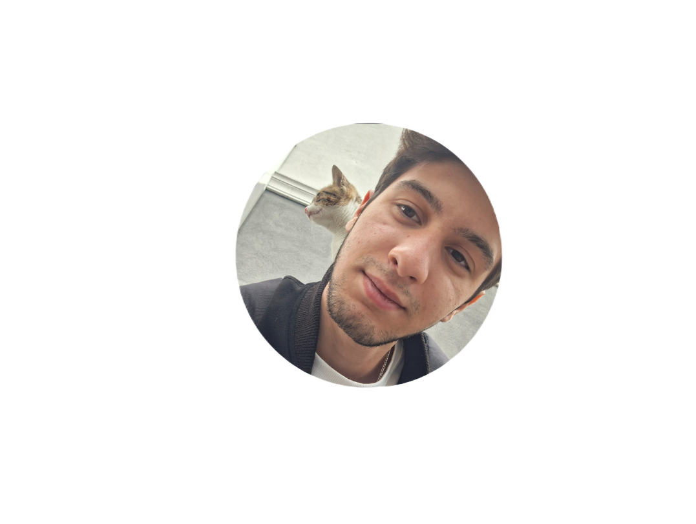

Anasayfa

Hakkımda
Merhaba,ben Erdem Durur bir bilgisayar mühendisliği öğrencisiyim. Teknolojiye olan tutkum beni
bu alana yönlendirdi ve her gün yeni şeyler öğrenmek için sabırsızlanıyorum. Programlama,
yapay zeka ve veri analizi konularına özel ilgi duyuyorum. Boş zamanlarımda oyun oynamayı
ve teknoloji haberlerini takip etmeyi seviyorum. Gelecekte, öğrendiğim bilgileri kullanarak
insanların hayatını kolaylaştıracak projeler geliştirmeyi hedefliyorum.
Eğitim Bilgisi
Düzce Üniversitesi|Eylül 2024-Devam ediyor.
Henüz bir sponsorumuz yok
İsterseniz sponsor olabilirsiniz.(lütfen olun$<3 )